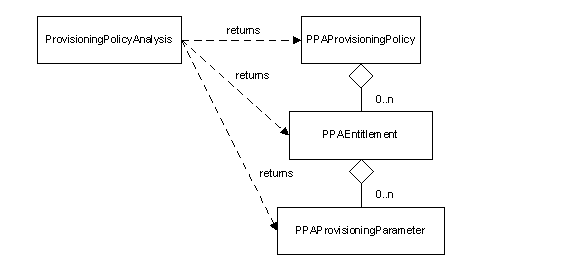

See: Description
| Class | Description |
|---|---|
| PPAEntitlement |
This class contains information that can be used in the analysis of
an entitlement for a provisioning parameter.
|
| PPAProvisioningParameter |
This class contains information that can be used in the analysis of
a provisioning parameter.
|
| PPAProvisioningPolicy |
This class contains information that can be used in the analysis of
a provisioning policy.
|
| ProvisioningPolicyAnalysis |
This class provides methods that can be used in the analysis of
policy enforcement being performed in the system.
|
| Exception | Description |
|---|---|
| PPAException |
This class encapsulates exception information encountered
by the provisioning policy analysis code.
|
Provides an application programming interface for policy analysis.
The Identity Manager provisioning platform controls access to managed resources using the provisioning policies defined in the system. Managed resources can be services such as IBM Tivoli Identity Manager, Windows NT, Solaris, and other clients. A provisioning policy grants entitlement to these resources based on the person's membership in a particular organization, an organizational role, or the fact that the person is not in any organizational role. Depending on how the provisioning policies are defined, more than one provisioning policy may apply to a given person. A person might be granted access to one service by one provisioning policy, and another service by another provisioning policy. More complex is the case where a person's access to a single service might be controlled by more than one provisioning policy. For example, the person might reside in an organization for which access to a service is controlled by one policy, and the person might have an organizational role for which access to the same service is controlled by another policy. This can make it rather difficult to determine the precise resources to which a given person is entitled. This document describes the Application Programming Interface (API) that is available for clients to analyze the policy enforcement being performed in the system.
The Policy Analysis API has been developed to provide developers an interface to Identity Manager that will allow them to obtain information about the provisioning policies defined in the system and the access granted a given individual.
The API consists of a set of java classes that retrieve and abstract the provisioning policy information that is used to control access to managed resources. The API does not provide support to allow a client to alter the provisioning policy enforcement in the system. Rather, it simply reports the enforcement as it is defined in the system. The client may use this information for the purposes of auditing, making decisions about potential changes to the policy enforcement in the system, and other tasks.
The API consists of a main class that provides the methods that can be used by a client to obtain policy enforcement information, and a set of classes the represent the policy enforcement in the system, and that are returned by the methods of the main class.

Figure 1 - Policy Analysis API Class Diagram
The ProvisioningPolicyAnalysis class provides the external interfaces for querying the policy enforcement being performed in the system. It provides interfaces that:
The other classes in the API represent the output from these interfaces, described below.
The PPAProvisioningPolicy class represents a provisioning policy, including information such as:
The PPAEntitlement class represents an entitlement, including information such as:
The PPAProvisioningParameter class represents a provisioning parameter, including information such as:
The following method prints the entitlement a given person has on a given service using the Policy Analysis API.
public static void printEntitlement(PersonEntity person, ServiceEntity service) {
try {
// get the entitlement for the person and service
PPAEntitlement entitlement = ProvisioningPolicyAnalysis.getEntitlement(person, service);
// print summary information
System.out.println("Target Name: " + entitlement.getTargetName());
System.out.println("Target Type: " + entitlement.getTargetType());
System.out.println("Workflow required: " + entitlement.isWorkflowRequired());
System.out.println();
// print parameters
Collection params = entitlement.getProvisioningParameters();
Iterator iter = param.iterator();
while (iter.hasNext()) {
PPAProvisioningParameter param = (PPAProvisioningParameter)iter.next();
System.out.println(Parameter: " + param.getName());
int[] enforcements = param.getEnforcements();
Object[] values = param.getValues();
// print parameter values and associated enforcements
for (int i = 0; i < enforcements.length; i++)
System.out.println("Value: " + values[i].toString() + "Enforcement: " + enforcements[i]);
System.out.println();
}
}
} catch (PPAException ppaException) {
System.out.println(ppaException.getMessage());
}
}
IBM Security Identity Manager 6.0.0
© Copyright International Business Machines Corporation 2007, 2012. All rights reserved. US Government Users Restricited Rights - Use, duplication or disclosure restricted by GSA ADP Schedule Contract with IBM Corp.